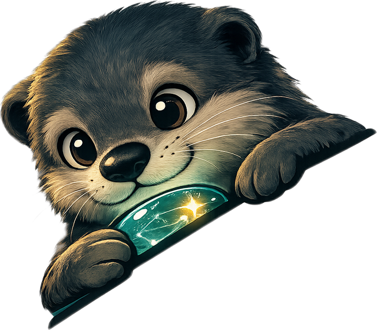
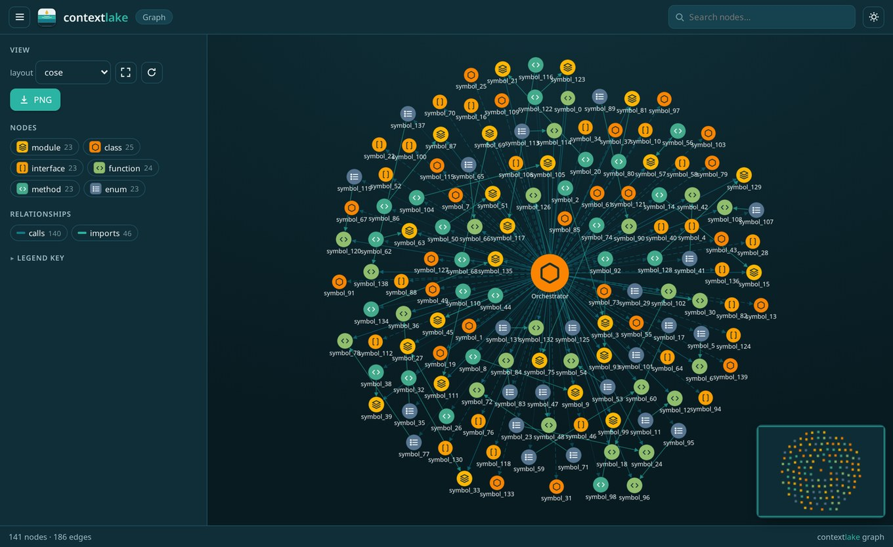

All your real context,
in one local lake.
contextlake mirrors your repositories, indexes them into a knowledge graph, and serves it to your AI tools over MCP, so agents answer from real source instead of guessing.
Your AI is only as good as what it can see.
Point it at one file and it's sharp. Ask it about the system across dozens of repos, and it starts guessing.
contextlake gives your tools the real source to read: mirrored to your machine, indexed into a queryable graph, and served to your editor over MCP. Everything runs locally and offline, so no code leaves your machine.
Three layers, adopted one at a time
The mirror is useful on its own. Each layer above it is optional, turn on only what you need.
 contextlake
contextlakeMirror
Clone every repo in a GitLab group into a faithful mirror, each parked on its most active branch and kept fresh with one command, never touching the branch you're on.
Knowledge optional
Parse the mirror into a code and dependency graph, then add semantic search, a council-verified wiki, and Atlassian / Figma / GitLab connectors.
Serve
Expose it all over MCP and an offline graph visualizer, so agents answer “where is X defined?” instead of grepping.
A whole codebase as one navigable graph
contextlake graph
renders a bounded, offline, interactive map, fleet overview, a symbol's neighbourhood, or a single repo. Type glyphs,
language lettermarks, confidence-coded edges, level-of-detail labels, and a navigator minimap keep even dense graphs legible.


The interactive visualizer, vendored, offline, no network. Export to Mermaid, DOT, or JSON.
Built for real working machines
Offline-first
The core tool is stdlib-only; nothing leaves your machine. The knowledge layer is opt-in and runs locally.
MCP-native
Serve the graph to Claude Code, Windsurf, Kiro, Cursor, and other IDEs, over stdio or HTTP. Most tools need no model.
Semantic search
A zero-config built-in CPU model, a local Ollama, or any OpenAI-compatible endpoint, your call.
Branch-safe at scale
Runs across hundreds of repos concurrently with adaptive backoff, and never clobbers your uncommitted work.
Curated wiki
LLM-synthesized, council-verified pages grounded strictly in graph facts, with provenance footers.
Editor steering
Generate AGENTS.md, .mcp.json, rules, and a skills library, wired to your graph.
Up and running in a minute
No GitLab or config needed to try it on a repo you already have. Point it at any local git repo and open the graph.